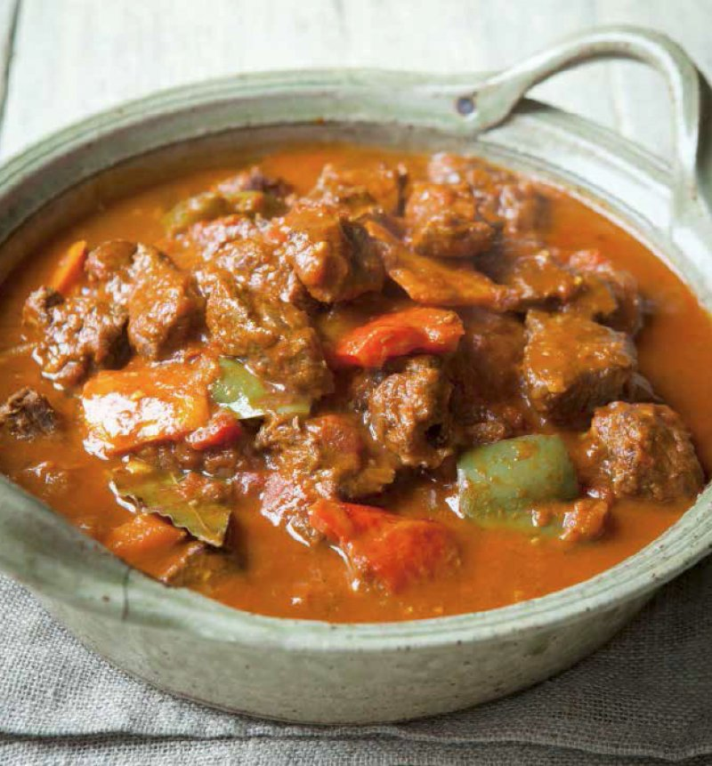

Hungarian Goulash

Description
If you think Hungary and think hearty food, then Goulash is probably exactly what comes to mind. Unsurprising given it is Hungary’s greatest food export!
Is it a stew? Is it a soup? It sort of lies between the two in terms of the amount of broth vs the stuff in it. Though one noticeable thing about traditional Goulash is that the broth is thinner than what you think of with stews, and it’s not thickened with flour or cream. Also, it’s not typically served over mash like stews, it’s served in bowls like soup.
Ingredients
- 1 kg/2 lb beef chuck
- 1 3/4 tsp cooking salt / kosher salt
- 1 tsp black pepper
- 1 tbsp extra virgin olive oil
- 2 tbsp/ 30g unsalted butter
- 2 brown onions
- 5 garlic cloves
- 2 capsicum/bell peppers
- 2 tomatoes
- 1/4 cup Hungarian-style paprika
- 1 tsp caraway seeds
- 1 bay leaf
- 1 litre / 4 cups beef stock/broth
- 2 carrots
- 2 potatoes
- 1 tbsp finely chopped parsley
Steps
- Preheat oven to 180°C/350°F (160°C fan), though you can use your slow cooker or stove instead.
- Season beef - Toss the beef with half the salt and pepper.
- Cook onion - Heat the oil and melt the butter in a large oven-proof dutch oven over high heat. Cook onion for 6 minutes until the edges are light golden.
- Cook beef – Add the beef and stir until the outside changes from red to brown, about 2 minutes. It won't go golden brown, it's not supposed to.
- Add vegetables – Add garlic, capsicum and tomato. Stir for 3 minutes – the tomato will mostly breakdown.
- Add paprika, caraway and bay leaf. Stir for 30 seconds.
- Slow cook – Add beef stock, stir, bring to simmer. Cover with a lid and transfer to the oven for 1 1/2 hours.
- Add potato – The beef should be pretty tender but not quite "fall-apart". Stir in carrot and potatoes. Return to oven, covered, for another 30 minutes. Beef should now be "fall-apart" – if not, return to the oven for 10 minutes at a time.
- Serve – Ladle goulash into bowls and sprinkle with parsley. Eat as is, with optional bread for dunking!
Home